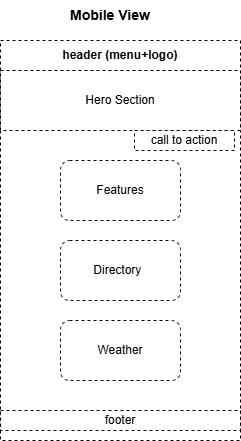
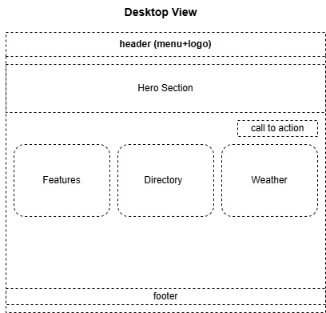

Site Name
Agri-Trade West Africa
This name reflects a regional digital platform focused on agriculture and trade across West Africa. It highlights both the agricultural sector and cross-border commerce.
Site Purpose
The purpose of this website is to connect small-scale farmers with wholesalers and logistics providers. It provides a data-driven platform that improves food security by reducing post-harvest waste and improving access to market and climate information.
Scenarios
- Where can I find farmers producing maize or cocoa in a specific region?
- What is the weather forecast before transporting perishable goods?
- What regulations must I follow to export agricultural products within ECOWAS?
Color Scheme
- Forest Green (#2E5A27): Used for headings and branding elements.
- Sandy Brown (#F4A460): Used for section borders and highlights.
- Carrot Orange (#E67E22): Used for call-to-action buttons.
- Light Background (#F9F9F9): Used for page background.
- Dark Gray (#333): Used for body text.
Typography
- Montserrat: Used for headings (h1, h2, h3) to create a bold and modern look.
- Open Sans: Used for body text for readability and clean presentation.
Sitemap
- Home Page
- Market Directory (JSON-based dynamic page)
- Logistics & Weather (API-based page)
Wireframes

Figure 1: Homepage mobile layout

Figure 2: Homepage desktop layout
Technical Plan
- JSON Data: producers.json will store farmer and cooperative data.
- API Integration: Weather API will provide real-time climate data.
- Responsiveness: Mobile-first design with single-column layout on small screens.
- Performance: Optimized images and minimal CSS for faster loading.